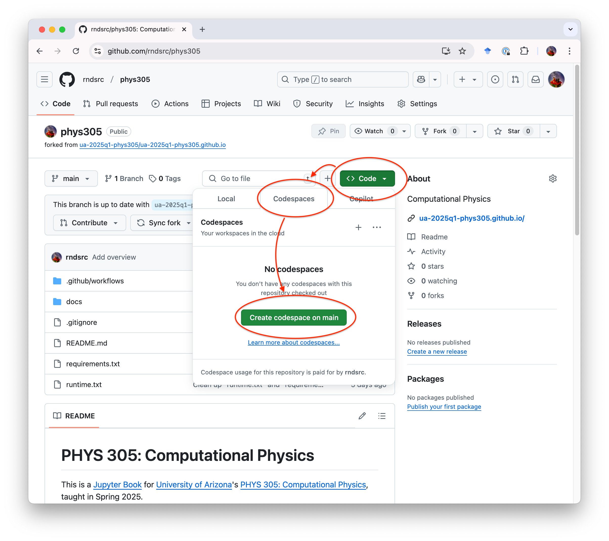
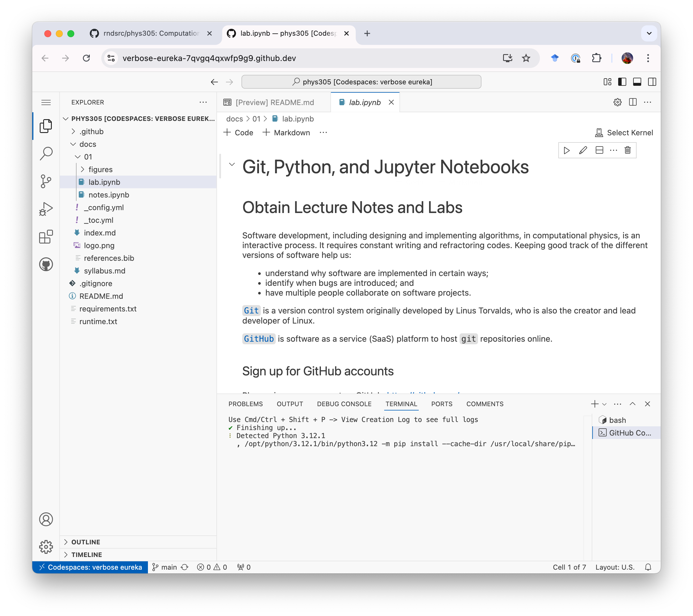
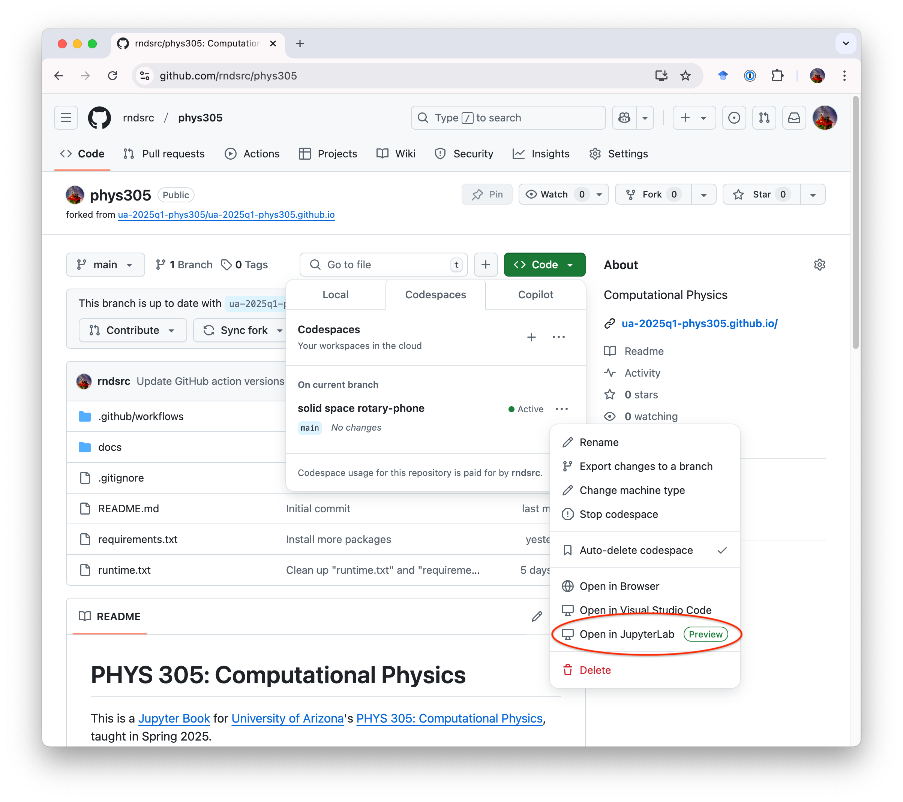
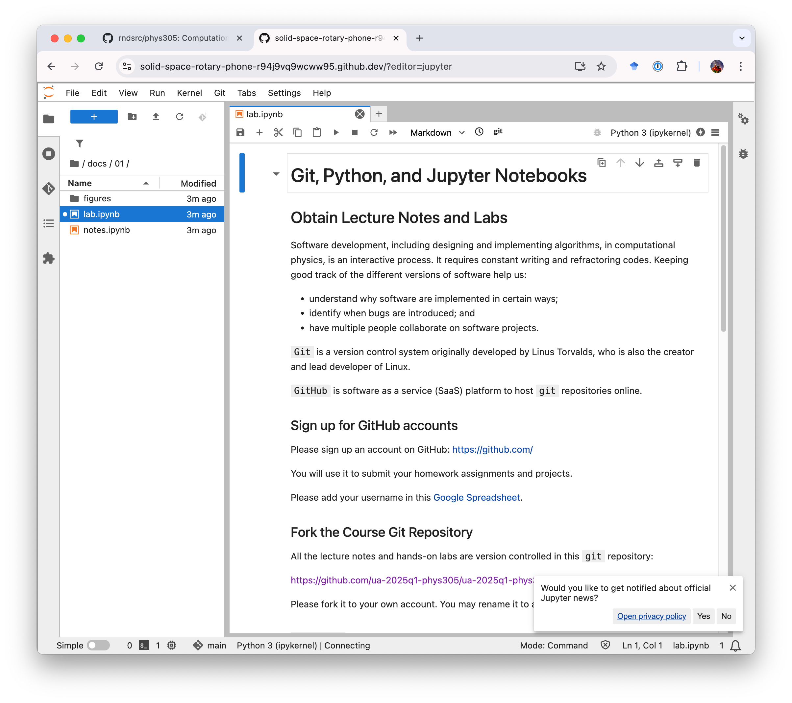

Git, Jupyter, and Python#
Obtain Lecture Notes and Labs#
Software development, including designing and implementing algorithms in computational physics, is an interactive process. It requires constant writing and refactoring of code. Keeping good track of different versions of software helps us:
understand why the software is implemented in certain ways;
identify when bugs are introduced; and
enable multiple people to collaborate on software projects.
Git is a version control system originally developed by Linus Torvalds, who is also the creator and lead developer of Linux.
GitHub is a Software-as-a-Service (SaaS) platform for hosting git repositories online.
Sign up for GitHub accounts#
Please sign up an account on GitHub: https://github.com/
You will use this account to submit your homework assignments and projects throughout the course.
Once you have created your account, please add your GitHub username to the following Google Spreadsheet.
Fork the Course Git Repository#
All the lecture notes and hands-on labs are version controlled in this git repository:
https://github.com/ua-2025q1-phys305/ua-2025q1-phys305.github.io
Please fork it to your own account.
You may rename it to a shorter name, e.g., just phys305.
GitHub Codespace#
There are many ways to run the hands-on codes.
The standard way is to clone the course git repository from GitHub to your own computer.
However, this requires installing software, setting up a development environment, etc, and may delay our progress.
Instead, we will start with GitHub Codespace for a uniform development envirnment.
Click the green “Code” button in your fork, select the “Codespace” Tab, and then click the green “Create codespace on main” button.

This would create a webapp version of Microsoft’s VSCode.
Navigate to docs/01/labs.ipynb in the “EXPLORER” on the left, you may now open this Lab notebook in VSCode.

Jupyter#
This lab is written in a Jupyter Notebook. It allows (data) scientists to mix codes with documentation and plots, and is very handy in exploring data. It is also very popular in learning code development.
Instead of viewing (and running) Jupyter Notebooks in VSCode, it is also possible to run it natively in Jupyter’s Integrated Development Environment (IDE) Jupyter Lab.
This turns out to be very easy to do with GitHub.
As long as you have an existing GitHub codespace, you can navigate to “Code”->”Codespaces”->On current branch”. Click the “…” and then “Open in Jupyter Lab (Preview)”.

This will open your codespace in Jupyter Lab.
Navigate again to docs/01/lab.ipynb on the left, you can now open this lab in Jupyter Lab:

Markdown#
In a Jupyter notebook, there are mainly two types of cells.
By default, cells contain executable “Code”. Pressing “Shift”+”Enter” would run the code.
The cells that display documentation, such as this one, are “Markdown” cells. Pressing “Shift”+”Enter” would render the documentation.
Depending on which the Jupyter Lab Plugins you have, you may use basic markdown to write basic documentations or MyST to create fancy scientific paper.
Basic markdown syntax includes:
# A first-level heading
## A second-level heading
### A third-level heading
**bold text** or __bold text__
*italic* or _italic_
> Text that is a quote
[A link](URL)

## HANDSON: turn this cell into a markdown cell; write a short introduction about yourself and your research interest.
Introduction to Python#
We will use the python programming language in the first half of PHYS 305. This hands-on lab will guide you through essential Python concepts and allow you to execute code cells directly to learn interactively.
Why Python?#
Easy to Learn: Simple, pseudo-code-like syntax makes it beginner-friendly.
Widely Used: Popular in academia, research, and industry.
Powerful Libraries: Extensive libraries for numerical computation (
NumPy,SciPy), data visualization (Matplotlib), and more.
Getting Started#
Python code can be written and executed interactively in Jupyter notebooks. In fact, the name “Jupyter” comes from the three programming langauge Julia, Python, and R. Let’s begin with the basics.
1. Printing Output#
Use the print() function to display output.
# Example: Print a message
print("Hello, world! Welcome to PHYS 305!")
Hello, world! Welcome to PHYS 305!
# HANDSON: Change the message
print("Your custom message here!")
Your custom message here!
2. Variables and Data Types#
Python supports various data types such as integers, floats, strings, and booleans.
# Example: Variable assignment
x = 6 # Integer
y = 3.14 # Float
phys = "Physics" # String
is_cool = True # Boolean
print("x =", x)
print("y =", y)
print("phys =", phys)
print("is_cool =", is_cool)
x = 6
y = 3.14
phys = Physics
is_cool = True
# HANDSON: Define and print variables
year = ...
height = ...
name = ...
is_student = ...
print("Year:", year)
print("Height:", height)
print("Name:", name)
print("Is student:", is_student)
Year: Ellipsis
Height: Ellipsis
Name: Ellipsis
Is student: Ellipsis
3. Basic Arithmetic#
Python can handle basic mathematical operations.
# Examples of arithmetic
addition = 7 + 8
subtraction = 9 - 3
multiplication = 15 * 6
division = 90 / 2
power = 45 ** 2
print("Addition:", addition)
print("Subtraction:", subtraction)
print("Multiplication:", multiplication)
print("Division:", division)
print("Power:", power)
Addition: 15
Subtraction: 6
Multiplication: 90
Division: 45.0
Power: 2025
# HANDSON: Arithmetic
a = 3
b = 6
# Calculate and print
sum_result = ...
pro_result = ...
div_result = ...
mod_result = ... # Remainder
print("Addition:", sum_result)
print("Multiplication:", pro_result)
print("Division:", div_result)
print("Remainder:", mod_result)
Addition: Ellipsis
Multiplication: Ellipsis
Division: Ellipsis
Remainder: Ellipsis
4. Lists#
Lists are ordered collections of items.
# Example: Creating a list
numbers = [1, 2, 3, 4, 5]
print("Original list:", numbers)
# Accessing elements
print("First element:", numbers[0])
print("Last element:", numbers[-1])
# Adding elements
numbers.append(6)
print("List after appending:", numbers)
# Removing last elements
numbers.pop()
print("List after removing last element:", numbers)
# Removing specific elements
numbers.remove(a) # note that `a` was defined above
print("List after removing", a, ":", numbers)
Original list: [1, 2, 3, 4, 5]
First element: 1
Last element: 5
List after appending: [1, 2, 3, 4, 5, 6]
List after removing last element: [1, 2, 3, 4, 5]
List after removing 3 : [1, 2, 4, 5]
# HANDSON: create your own list and manipulate it.
# Create a list
fruits = ...
print("Fruits:", fruits)
# Add an element to the list
...
print("Fruits:", fruits)
# Remove an item
...
print("Fruits:", fruits)
Fruits: Ellipsis
Fruits: Ellipsis
Fruits: Ellipsis
5. For Loops#
Loops allow you to iterate over a sequence of items.
# Example: Loop through a list
for number in range(10):
print("Number:", number)
Number: 0
Number: 1
Number: 2
Number: 3
Number: 4
Number: 5
Number: 6
Number: 7
Number: 8
Number: 9
### HANDSON: Write a loop to print squares of numbers.
# Your turn: Print squares
...
print(f"Square of {i} is {i ** 2}")
Cell In[11], line 5
print(f"Square of {i} is {i ** 2}")
^
IndentationError: unexpected indent
6. Functions#
Functions allow you to reuse code.
# Example: Define a function
def greet(name):
return f"Hello, {name}! Welcome to PHYS 305!"
# Call the function
message = greet(name)
print(message)
# HANDSON: Function to calculate circle area
def circle_area(radius):
...
# Test the function
area = circle_area(5)
print("Area of circle with radius 5:", area)
7. NumPy: Numerical Computing#
Python’s power comes from its libraries.
For scientific computing, numpy and matplotlib are probably the two most important libraries.
Let’s explore their capabilities.
NumPy provides support for large multi-dimensional arrays and matrices, along with mathematical functions to operate on them.
# Example: Using NumPy
import numpy as np
# Create an array
array = np.array([1, 2, 3, 4, 5])
print("Array:", array)
# Perform operations
squared = array ** 2
print("Squared Array:", squared)
# Generate a range of numbers
linspace = np.linspace(0, 10, 11)
print("Linspace:", linspace)
NumPy’s core functions are written in C (see, e.g., here). Using NumPy for large arrays is much faster than for loop in python.
array = np.arange(1000)
%%time
squared = []
for a in array:
squared.append(a*a)
%%time
squared = array * array
# HANDSON: NumPy calculations
# Create an array of numbers from 1 to 10
numbers = ...
# Calculate their squares and square roots
squares = ...
roots = ...
print("Numbers:", numbers)
print("Squares:", squares)
print("Square Roots:", roots)
8. Matplotlib: Data Visualization#
Matplotlib is a plotting library for creating static, animated, and interactive visualizations.
# Example: Plotting with Matplotlib
import matplotlib.pyplot as plt
# Create data with NumPy
x = np.linspace(0, 10, 100)
y = np.sin(x)
# Create a plot with Matplotlib
plt.plot(x, y, label='sin(x)')
plt.title("Sine Wave")
plt.xlabel("x")
plt.ylabel("sin(x)")
plt.legend()
plt.grid()
# Show and save figure
plt.show() # optional in jupyter notebook
plt.savefig('sin.pdf')
# HANDSON: Create a plot
# Let's try to plot two curves in a single plot
x = np.linspace(0, 2 * np.pi, 100)
y1 = np.sin(x)
y2 = np.cos(x)
# Plot both sine and cosine
...
...
# Customize the plot
...
# Show and save figure
...
Summary#
In this lab, you learned:
The basic of Git and GitHub
The basic of Jupyter Notebook and Jupyter Lab
The basic of Python:
How to print output
Variables and data types
Basic arithmetic operations
Working with lists
Using loops
Writing functions
Introduction to NumPy for numerical computations
Introduction to Matplotlib for data visualization